فصل یازدهم — اعتبار آماری کشفیات و پیشگیری از کشفیات کاذب#
درس دادهکاوی — کارشناسی ارشد مهندسی کامپیوتر
پرسش محوری: وقتی یک برنامه از میلیونها رکورد، دهها مدل، هزاران قاعده و چند خوشه «الگو» استخراج میکند، از کجا بفهمیم این یافتهها واقعاً قابل اعتمادند و فقط حاصل تصادف، جستوجوی زیاد، انتخاب دلخواه یا نشت اطلاعات نیستند؟
فایلهای آموزشی قابل دانلود: PDF فصل یازدهم · سورس XeLaTeX و شکلها · کد محاسباتی Python · Notebook اجراشده · فهرست آزمونهای ساختگی · خروجیهای دو مدل روی دادهٔ آزمون ساختگی · تنظیمات آزمایش صفر ساختگی. تمام دادهها آموزشی و ساختگی هستند.
اهداف یادگیری و جایگاه فصل#
پس از این فصل باید بتوانید: (۱) فرض صفر و فرض مقابل را دقیق تعریف کنید؛ (۲) مقدار \(p\) را از احتمال درستبودن فرض صفر جدا کنید؛ (۳) آزمون دوجملهای و آزمون جایگشتی را دستی انجام دهید؛ (۴) اندازهٔ اثر و بازهٔ اطمینان را همراه آزمون گزارش دهید؛ (۵) خطای نوع اول و دوم، توان و پیشثبت معیار را تفسیر کنید؛ (۶) FWER و FDR را از یکدیگر جدا کنید؛ (۷) Bonferroni، Holm و BH را روی یک مثال ششآزمونی محاسبه کنید؛ (۸) با تصادفیسازی، توزیع مرجع متناسب با مسئله بسازید؛ (۹) ادعای برتری طبقهبند، اهمیت قواعد انجمنی و خوشهها و ناهنجاریها را با کنترل مناسب ارزیابی کنید؛ (۱۰) نشت اطلاعات، آزمونگیری مکرر و گزارشگزینی را تشخیص دهید و گزارشی قابل بازتولید بنویسید.
خاستگاه علمی: ستون فقرات این فصل، Tan, Steinbach, Karpatne & Kumar، Introduction to Data Mining، ویرایش دوم، فصل ۱۰، Avoiding False Discoveries، صفحات چاپی ۷۵۵ تا ۸۰۸ است. بخشهای ۱۰٫۱ تا ۱۰٫۶ آن به ترتیب آزمون آماری، مدلسازی توزیع صفر، طبقهبندی، قواعد انجمنی، خوشهبندی و تشخیص ناهنجاری میپردازد. در مرجع Han, Pei & Tong، Data Mining: Concepts and Techniques، ویرایش چهارم، بخش ۴٫۳ (صفحات ۱۶۳ تا ۱۶۸) دربارهٔ جالببودن الگوها و بخش ۶٫۶ (صفحات ۲۷۸ تا ۲۸۹) دربارهٔ ارزیابی مدل و آزمون معناداری، زمینهٔ مکمل فراهم میکند. این فصل مستقل، مثالها و شکلهای تألیفی دارد. بخشهایی مانند Wilson، قیود وابستگی در BH و کنترل منفی، تکمیل روششناسیاند؛ آنها را عیناً به متن دو کتاب نسبت نمیدهیم.
۱۱ـ۱. مسئلهٔ پیوسته: آزمایشگاه کشف الگو در یک فروشگاه#
فرض کنید گروه دادهکاوی روی تراکنشهای یک فروشگاه کار میکند. از دادههای سه ماه، شش قاعدهٔ خرید استخراج شده، دو طبقهبند خطرِ لغو سفارش آموزش داده شده، خوشههایی از مشتریان تشکیل شده و فهرست ۱۵ تراکنشِ غیرعادی گزارش شده است. خروجی ظاهراً پر از «کشف» است؛ ولی هر روش حتی از دادهٔ تصادفی نیز عددی خوشایند تولید میکند. اینکه بهترین مدلِ آزمایششده دقت بالاتری دارد، بهخودیخود اثبات نمیکند مدل در مشتریان جدید بهتر خواهد بود. اینکه یک قاعدهٔ انجمنی Lift بزرگ دارد نیز نشان نمیدهد ارتباط خارج از نمونه یا مستقل از زمینه برقرار است.
یک ادعای قابل دفاع باید شش پرسش را پاسخ دهد: واحد مستقل مشاهده چیست؟ دقیقاً چه فرضی آزموده میشود؟ آمارهٔ آزمون و توزیع آن تحت فرض صفر چیست؟ چند آزمون و چند انتخاب انجام شده است؟ اثر چقدر بزرگ و مهم است؟ آیا نتیجه روی داده یا دورهٔ مستقل بازتولید میشود؟ الگوریتم صرفاً ابزار تولید نامزد است؛ پژوهش آماری ابزار ارزیابی نامزدهاست.

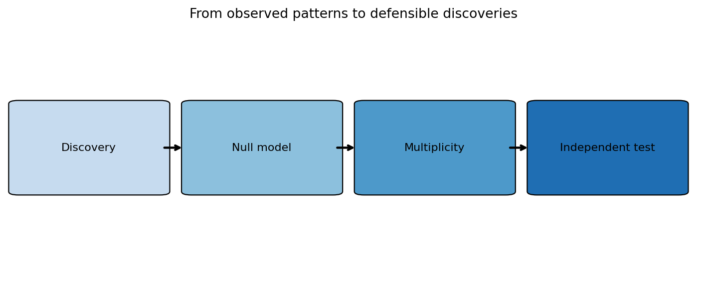
Fig. 170 شکل ۱۱ـ1. مسیر ارزیابی: خروجی استخراج الگو باید از مدل صفر، تعدد آزمون و آزمایش مستقل عبور کند.#
قرارداد مثال مشترک#
شش فرضیهٔ آموزشی را با \(p\)های اولیهٔ \(0.001,0.012,0.021,0.039,0.20,0.61\) در فایل pvalues_synthetic.csv ثبت کردهایم. این اعداد دادهٔ ساختگی برای تدریس روشهای اصلاح تعدد آزموناند، نه \(p\)های حاصل از یک پژوهش تجربی واقعی. دو مجموعهٔ کوچک دیگر برای مثال آزمون دوجملهای و تصادفیسازی داریم؛ اندازهٔ نمونهها را کوچک انتخاب کردهایم تا محاسبهٔ دستی امکانپذیر باشد.
۱۱ـ۲. از جمعآوری داده تا ادعای قابل آزمون#
نخست میان «مشاهده»، «آماره» و «ادعا» فرق بگذارید. مشاهده میتواند سفارش یک مشتری باشد. آماره مثلاً اختلاف میانگین هزینهٔ سفارش دو گروه است. ادعا دربارهٔ جمعیت مشتریان آینده بیان میشود و به مدلی از نمونهگیری نیاز دارد. اگر مشتری در چند سفارش ظاهر شده باشد، سفارشها لزوماً مستقل نیستند؛ افزایش ظاهری تعداد سطرها، تعداد واحدهای مستقل را زیاد نمیکند. در دادهٔ زمانی، مجاورت مشاهدات و تغییر رژیم نیز استنباط را تغییر میدهد.
قبل از نگاهکردن به نتایج باید مشخص کنید کدام متغیر پاسخ، کدام گروه، کدام بازهٔ زمانی، کدام آستانه و کدام مقایسه موضوع تصمیم است. انتخاب هرکدام پس از دیدن نتیجه میتواند جستوجوی چندگانهٔ پنهان ایجاد کند. اگر کاوش اکتشافی است، یافته را نامزد فرضیه بنامید و آزمون تأییدی را روی نمونهٔ مستقل اجرا کنید.
۱۱ـ۳. فرض صفر و فرض مقابل؛ هر دو باید عملیاتی باشند#
فرض صفر (Null hypothesis) را \(H_0\) و فرض مقابل (Alternative hypothesis) را \(H_1\) مینویسیم. در مثال طبقهبندِ حدس تصادفی، فرض صفر ساده این است که احتمال پیشبینی درست \(0.5\) باشد. اگر هدف اثباتِ بهتر بودن است، فرض مقابل \(p>0.5\) خواهد بود. در قواعد انجمنی، فرض صفر ممکن است استقلال دو قلم با حاشیههای مشخص باشد. در خوشهبندی، فرض صفر باید سازوکار تولید دادهٔ «بدون خوشهٔ موردنظر» را تعریف کند؛ این فرض میتواند نسبت به هندسهٔ مسئله متفاوت باشد.
تنها نوشتن «بین دو متغیر ارتباطی نیست» کافی نیست. باید روشن شود کدام جمعیت، چه نوع استقلال، کدام واحد نمونهگیری و چه شرطهایی برقرارند. اگر گروه مشتری عمدهفروش و خردهفروش ترکیب شدهاند، فرض استقلالِ کلی ممکن است حتی در صورت نبود رابطه درون هر گروه رد شود. تعریف نادرست \(H_0\) هر نتیجهٔ ظاهراً دقیقی را بیاعتبار میکند.
۱۱ـ۴. آمارهٔ آزمون و توزیع تحت فرض صفر#
آمارهٔ آزمون (Test statistic) تابعی از داده است: \(T=T(X_1,\ldots,X_n)\). برای آزمون تعداد پیشبینیهای درست، \(T\) همان شمار موفقیتها است. برای مقایسهٔ دو الگوریتم، \(T\) میتواند اختلاف میانگین خطا روی مجموعهٔ آزمون مشترک باشد. توزیع صفر (Null distribution) یعنی الگوی مقادیری که اگر \(H_0\) برقرار باشد، برای \(T\) انتظار داریم.
اگر توزیع صفر معلوم نیست، میتوان از جایگشت (Permutation)، شبیهسازی با حفظ قیود داده یا تقریبهای آماری استفاده کرد. چنین تخمینی تنها وقتی معنیدار است که سازوکار جابهجایی واقعاً با فرض صفر سازگار باشد. مثلاً در دادهٔ زمانی، جابهجایی آزادِ تمام زمانها معمولاً ساختار وابستگی را میشکند و آزمونی غلط میسازد.

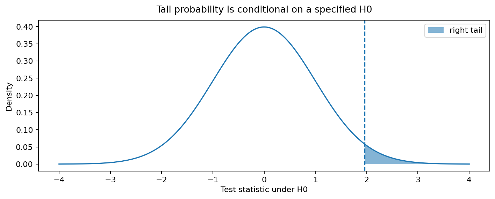
Fig. 171 شکل ۱۱ـ2. در آزمون یکطرفه، مقدار p سطح زیر دُم توزیع آماره تحت فرض صفر است؛ نه احتمال درستبودن فرض صفر.#
۱۱ـ۵. مقدار \(p\): تعریف درست و سوءبرداشتهای متداول#
برای آزمون یکطرفه با مقدار مشاهدهشده \(t_{obs}\)، اگر مقدار بزرگ نشانهٔ شواهد علیه \(H_0\) باشد، تعریف چنین است:
در آزمون دوطرفه باید مفهوم «حداقل به همان اندازه دور از صفر» را دقیقاً براساس آماره و توزیع آن تعریف کرد؛ در توزیع نامتقارن نمیتوان همیشه دو برابرِ یک دُم گرفت. مقدار \(p\) احتمال درستبودن \(H_0\) نیست؛ زیرا احتمال روی دادهٔ محتمل تحت فرض صفر محاسبه میشود، نه روی خود فرض. مقدار \(p\) برابر با احتمال تکرار عین نتیجه در مطالعهٔ بعدی نیز نیست. وقتی \(p>\alpha\) است، نتیجه فقط عدم رد فرض صفر است؛ این به معنای اثبات نبود اثر نیست.
مثال: \(p=0.03\) یعنی تحت مدل صفر و شرایط آزمون، رخدادی دستکم به همان اندازهٔ افراطی احتمال ۳٪ دارد. از این جمله بهتنهایی نمیتوان نتیجه گرفت «با احتمال ۹۷٪ کشف ما درست است». اندازهٔ اثر، هزینهٔ خطا، کیفیت مدل صفر، انتخابهای پژوهشگر و بازتولید همچنان لازماند.
۱۱ـ۶. حل دستی آزمون دوجملهای: هشت موفقیت از ده پیشبینی#
مدلی را در نظر بگیرید که در \(n=10\) آزمون مستقل، \(8\) پیشبینی درست دارد. تحت \(H_0:p=0.5\) و فرض دوجملهای بودن شمار موفقیتها، \(X\sim\operatorname{Binomial}(10,0.5)\). برای آزمون «بهتر از حدس»، مقدار \(p\) برابر است با:
پس با سطح \(\alpha=0.05\)، فرض صفر رد نمیشود، هرچند دقت مشاهدهشده ۸۰٪ است. اگر ۹ موفقیت داشتیم، \(p=(10+1)/1024=0.0107421875\) و آزمون یکطرفه در همین سطح معنادار میشد. این مثال نشان میدهد مرز دودویی «موفق/ناموفق» لزوماً با تغییر کوچک داده جابهجا میشود و هیچیک جایگزین برآورد اندازهٔ اثر نیست. اگر پیشبینیهای ده سطر به یک مشتری وابسته باشند، فرض استقلال دوجملهای نیز باید بازبینی شود.

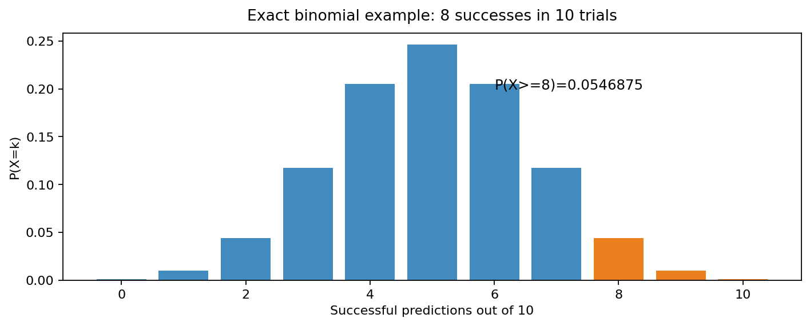
Fig. 172 شکل ۱۱ـ3. توزیع دوجملهای برای ده آزمون مستقل: هشت موفقیت از ده در سطح پنج درصد کافی نیست.#
۱۱ـ۷. خطاهای نوع اول و دوم، توان و پیشثبت#
خطای نوع اول هنگامی رخ میدهد که \(H_0\) درست است اما آن را رد کنیم؛ سطح از پیش تعیینشدهٔ آزمون \(\alpha\) کرانی بر احتمال این خطا در شرایط مدل آزمون است. خطای نوع دوم هنگامی است که اثر موردنظر برقرار است اما آزمون آن را کشف نمیکند؛ احتمال آن \(\beta\) و توان (Power) برابر \(1-\beta\) است. توان تابعِ اندازهٔ اثر، پراکندگی، تعداد واحدهای مستقل، نوع آزمون و آستانهٔ \(\alpha\) است.
کاهش \(\alpha\) معمولاً خطای نوع اول را کمتر میکند اما اگر اندازهٔ نمونه ثابت باشد، ممکن است توان را کاهش دهد. پیش از آزمایش باید «کوچکترین اثر دارای ارزش کاربردی» و بودجهٔ اشتباه تصمیم تعیین شود. آزمونهای کمتوان نتایج غیرمعنادار زیادی تولید میکنند؛ افزون بر این، میان آثار کشفشده، اندازهٔ اثر ممکن است بهواسطهٔ انتخابِ نتایج بزرگ اغراقآمیز باشد.

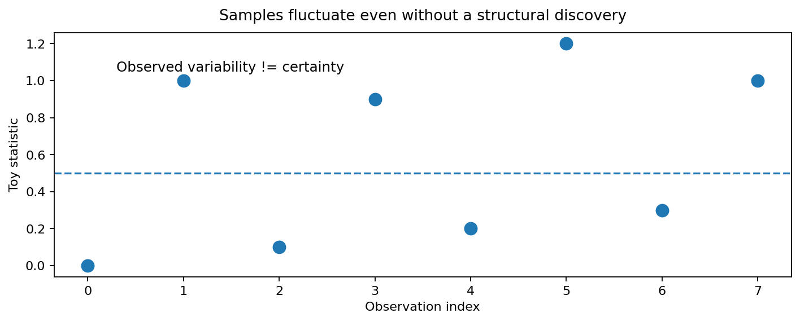
Fig. 173 شکل ۱۱ـ4. نوسان مشاهدهها را نباید با وجود ساختار پایدار در جامعه اشتباه گرفت.#
۱۱ـ۸. اندازهٔ اثر و بازهٔ اطمینان در کنار مقدار \(p\)#
آزمون فرض اغلب دربارهٔ ناسازگاری داده با یک فرض مشخص است؛ اندازهٔ اثر (Effect size) دربارهٔ مقدار تفاوت یا ارتباط است. در طبقهبندی، اختلاف نرخ خطا ممکن است ۰٫۲ درصد باشد؛ با حجم دادهٔ بزرگ این اختلاف میتواند از نظر آماری معنادار اما از نظر هزینهٔ عملی ناچیز باشد. در برابر، اختلاف ۱۵ درصد با نمونهٔ کوچک ممکن است اهمیت عملی بالایی داشته باشد اما به دلیل عدم قطعیت از مرز \(\alpha\) عبور نکند.
برای ۸ موفقیت از ۱۰ مشاهده، برآورد نقطهای نرخ موفقیت \(0.8\) است. بازهٔ Wilson دوطرفهٔ تقریباً ۹۵٪ با \(z\approx1.96\) از رابطهٔ زیر ساخته میشود:
جایگذاری \(\hat p=0.8,n=10\) بازهٔ تقریبی \([0.4902,0.9433]\) را میدهد. پهنای زیاد آن یادآوری میکند که ۱۰ آزمون برای ادعا دربارهٔ دقت واقعی کافی نیست. تفسیر بسامدیِ این بازه آن است که رویهٔ ساخت بازه در تکرار آزمایشهای واجد فرضها پوشش تقریبی ۹۵٪ دارد؛ این جمله با «احتمال ۹۵٪ برای ثابت واقعی در همین بازه» یکی نیست.
۱۱ـ۹. آزمایشهای متعدد؛ چرا ۵٪ دیگر ۵٪ نیست؟#
اگر یک فرض صفر درست با آزمون سطح ۵٪ بررسی شود، خطای نوع اول حداکثر حدود ۵٪ است. اگر \(m\) فرض صفرِ درست و آزمونها مستقل باشند، احتمال حداقل یک مثبت کاذب برابر است با:
برای ۵۰ آزمون مستقل با \(\alpha=0.05\)، مقدار برابر \(1-0.95^{50}\approx0.9231\) است؛ یعنی حتی وقتی هیچ اثر واقعی نیست، احتمال مشاهدهٔ حداقل یک نتیجهٔ ظاهراً معنادار نزدیک ۹۲٪ میشود. این فرمول به استقلال آزمونها متکی است؛ در وابستگی، مقدار دقیق تغییر میکند و نباید همین عدد را بیقید تعمیم داد. البته انتظار تعداد خطاهای نوع اول در حالت ۵۰ آزمونِ صفرِ سطحدار، از خطیبودن امید ریاضی تقریباً \(50\times0.05=2.5\) است، حتی بدون استقلال.

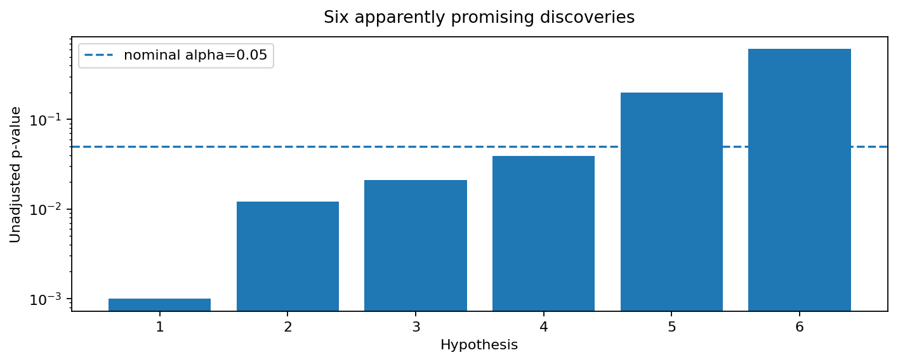
Fig. 174 شکل ۱۱ـ5. شش مقدار p پیش از اصلاح تعدد آزمون؛ نگاه به همهٔ آزمونها ضروری است.#

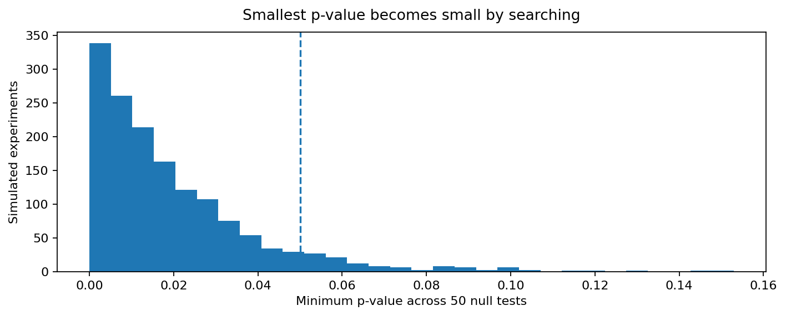
Fig. 175 شکل ۱۱ـ6. کوچکترین p میان دهها آزمونِ کاملاً صفر میتواند بسیار کوچک شود.#
۱۱ـ۱۰. دو مفهوم متفاوت: کنترل FWER و کنترل FDR#
فرض کنید \(m\) آزمون انجام دادهایم، \(R\) نتیجه را معنادار اعلام کردهایم و \(V\) مورد از آنها مثبت کاذب است. در مطالعهای با ریسک بالا، حتی یک کشف غلط میتواند نامطلوب باشد؛ پس نرخ خطای خانوادگی مناسب است:
در غربالگری هزاران الگو ممکن است پذیرش درصد محدودی از خطا در میان کشفها قابلقبول باشد؛ آنگاه نرخ کشف کاذب مطرح میشود:
FWER و FDR یک معنی ندارند. FDR دربارهٔ امید نسبت خطا در مجموعهٔ کشفها است، نه تضمینی که دقیقاً حداکثر ۵٪ کشفهای هر اجرای خاص غلط باشند. اگر تصمیمِ پزشکی حساس باشد یا تأیید یک قاعدهٔ مهم برای همهٔ مشتریان لازم باشد، معیار کنترل را باید با ریسک واقعی انتخاب کرد. خانوادهٔ آزمونها (Family) نیز باید از ابتدا مشخص شود؛ جداکردن دلخواه خانواده پس از مشاهدهٔ نتایج تفسیر را بیاعتبار میکند.

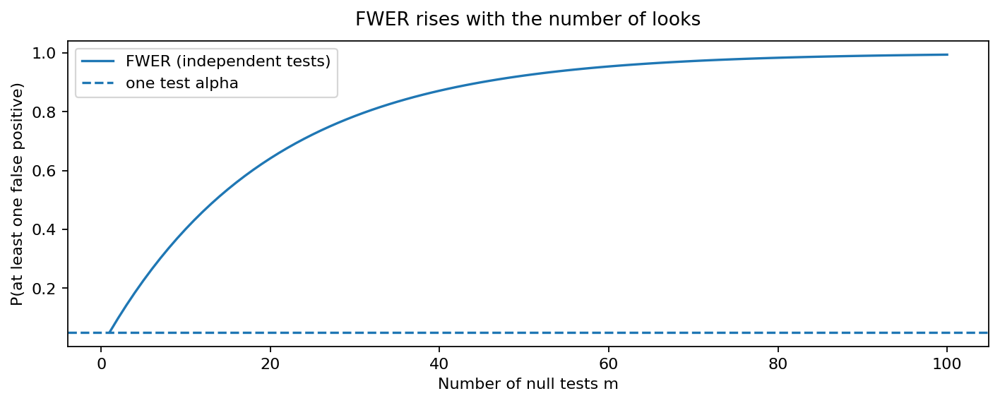
Fig. 176 شکل ۱۱ـ7. تحت استقلال آزمونها، خطر حداقل یک کشف کاذب با تعداد آزمونها رشد میکند.#
۱۱ـ۱۱. روش Bonferroni و استدلال کران اجتماع#
روش Bonferroni هر آزمون را با \(\alpha/m\) مقایسه میکند. در نمونهٔ ششفرضیهای ما \(\alpha/m=0.05/6\approx0.00833\) است. فقط مقدار \(p=0.001\) از این مرز عبور میکند. مقدارهای \(p\) اصلاحشده با \(p_i^{adj}=\min(1,mp_i)\) عبارتاند از: \(0.006,0.072,0.126,0.234,1,1\). پس فقط فرضیهٔ اول تأیید میشود.
دلیل قوت روش، کران اجتماع است:
به استقلال میان آزمونها احتیاج نیست، اما هر \(p\) تحت فرض صفر مربوط باید معتبر باشد. این روش در آزمونهای بسیار زیاد و دارای ارتباط علمی میتواند محافظهکار و کمتوان شود؛ محافظهکاری از ارزش کاربردی تصمیمات حوزهای مستقل نیست.
۱۱ـ۱۲. روش Holm: کنترل خانوادگی با توان بیشتر#
Holm ابتدا \(p\)ها را صعودی مرتب میکند، سپس \(p_{(1)}\) را با \(\alpha/m\)، \(p_{(2)}\) را با \(\alpha/(m-1)\) و به همین ترتیب مقایسه میکند. در نخستین عدم رد، مرحله متوقف میشود. در مثال ما:
رتبهٔ مرتبشده |
\(p_{(i)}\) |
مرز Holm |
تصمیم مرحلهای |
|---|---|---|---|
۱ |
۰٫۰۰۱ |
۰٫۰۰۸۳۳ |
رد \(H_0\) |
۲ |
۰٫۰۱۲ |
۰٫۰۱۰ |
توقف؛ عدم رد |
۳ |
۰٫۰۲۱ |
۰٫۰۱۲۵ |
دیگر بررسی نمیشود |
۴ |
۰٫۰۳۹ |
۰٫۰۱۶۷ |
دیگر بررسی نمیشود |
۵ |
۰٫۲۰ |
۰٫۰۲۵ |
دیگر بررسی نمیشود |
۶ |
۰٫۶۱ |
۰٫۰۵ |
دیگر بررسی نمیشود |
مقادیر اصلاحشدهٔ Holm پس از اعمال بیشینهٔ تجمعی عبارتاند از \(0.006,0.060,0.084,0.117,0.400,0.610\)؛ تنها اولی زیر ۰٫۰۵ است. روش Holm مانند Bonferroni کنترل FWER را با وابستگی دلخواه میان آزمونها، در صورت اعتبار \(p\)-valueهای منفرد فراهم میکند، اما در مجموعههای دیگر ممکن است آزمونهای بیشتری را رد کند.
۱۱ـ۱۳. روش Benjamini–Hochberg: کنترل نسبت متوسطِ خطاها#
برای کنترل FDR در سطح \(q=0.05\)، \(p\)ها را صعودی مرتب و بزرگترین رتبهٔ \(k\) را پیدا میکنیم که
سپس فرضهای رتبهٔ ۱ تا \(k\) رد میشوند. در مثال \(m=6\)، مرزهای رتبهای عبارتاند از: \(0.00833,0.01667,0.025,0.03333,0.04167,0.05\). مقدارهای \(p\) با سه مرز اول سازگارند اما چهارمی \(0.039>0.03333\) است؛ پس سه کشف اعلام میشود. مقدارهای اصلاحشدهٔ BH نیز \(0.006,0.036,0.042,0.0585,0.24,0.61\) هستند.
BH در چارچوب کلاسیک برای فرضهای صفرِ دارای \(p\) معتبر و آزمونهای مستقل و نیز بعضی ساختارهای وابستگی مثبت، تضمین FDR دارد؛ برای وابستگی دلخواه، بدون بررسی فرضها نباید همان تضمین را ادعا کرد. نسخهٔ محافظهکارتر Benjamini–Yekutieli برای وابستگی گسترده وجود دارد، اما در این فصل اجرای کوتاه و دقیق BH را آموزش میدهیم و شرطهای اعتبار آن را صریح میگذاریم.

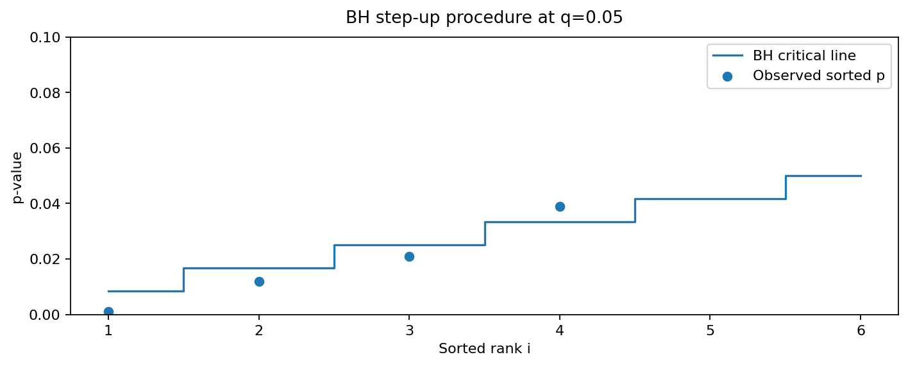
Fig. 177 شکل ۱۱ـ8. مقایسهٔ pهای مرتب با مرزهای BH در سطح FDR پنج درصد.#

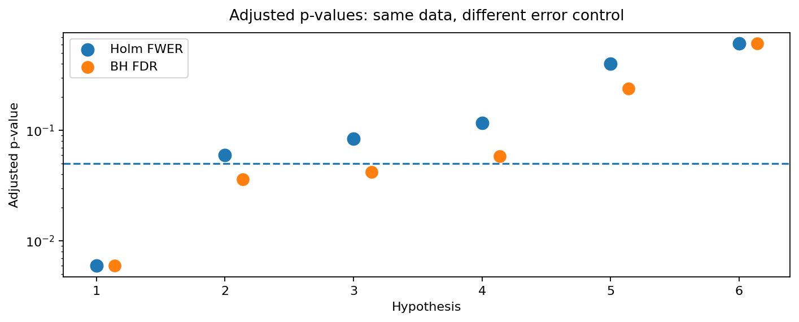
Fig. 178 شکل ۱۱ـ9. مقایسهٔ مقادیر p اصلاحشدهٔ Holm و BH؛ تصمیمها تابع معیار خطای انتخابیاند.#
۱۱ـ۱۴. مقایسهٔ گامبهگام سه اصلاح روی یک فایل واقعیِ آموزشی#
فایل pvalues_synthetic.csv را باز کنید. ستون p_value شامل شش مقدار مثال است و effect_size فقط اندازهٔ اثر ساختگی را برای بحث کاربردی نگه میدارد. برنامهٔ chapter11_examples.py هر سه اصلاح را بدون SciPy محاسبه میکند. خروجی باید در سطح \(\alpha=q=0.05\) چنین باشد: Bonferroni یک فرض، Holm یک فرض، BH سه فرض. این نتیجه نشاندهندهٔ «بهتر بودن همیشگی BH» نیست؛ به این معناست که روشها هدف خطای متفاوتی دارند.
یک خطای رایج، اعمال Bonferroni فقط بر تعداد نتایجی است که بعد از فیلترشدن باقی ماندهاند. اگر ابتدا از ۱۰۰۰ قاعده، ۶ قاعدهٔ دارای کمترین \(p\) را انتخاب کنیم و بعد بگوییم فقط ۶ آزمون داشتهایم، انتخاب اولیه را پنهان کردهایم. در یک طرح صحیح، خانوادهٔ آزمونهای جستوجوشده یا راهکار استنباط پس از انتخاب باید مشخص شود. به همین دلیل فایل ثبت آزمایش باید تعداد فرضهای آزمودهشده، کد انتخاب و نسخهٔ مجموعهداده را ذخیره کند.
۱۱ـ۱۵. ساخت توزیع صفر با آزمون جایگشتی#
در دادهٔ جدولی ممکن است توزیع آماره مجهول باشد. فرض کنید دو گروه مستقل هرکدام سه مشاهده دارند: \(A=(8,9,10)\) و \(B=(1,2,3)\). اختلاف میانگین \(\bar A-\bar B=7\) است. تحت فرض صفر مناسبِ قابلیت جابهجایی برچسبهای گروه (Exchangeability)، از شش عدد، هر سه عدد میتوانند گروه A را بسازند. تعداد تخصیصهای ممکن \({6\choose3}=20\) است.
تنها دو تخصیص، اختلاف میانگین با قدر مطلق حداقل ۷ ایجاد میکنند: ترکیب سه عدد بزرگ و ترکیب معکوس. پس مقدار \(p\) دقیقِ آزمون دوسویهٔ جایگشتی:
در نتیجه باوجود اختلاف بزرگِ میانگینها، نمونه آنقدر کوچک است که با سطح ۵٪ شواهد کافی برای رد فرض صفر فراهم نمیکند. شرط تبادلپذیری مهمتر از تعداد جایگشتهاست: اگر یکی از گروهها فقط از ماه زمستان آمده باشد، اختلاط برچسبها ممکن است اثر فصل را نابود کند. برای دادههای زوجی باید جایگشت علامت اختلافهای زوجی و برای دادهٔ زمانی روش سازگار با ساختار وابستگی به کار رود.

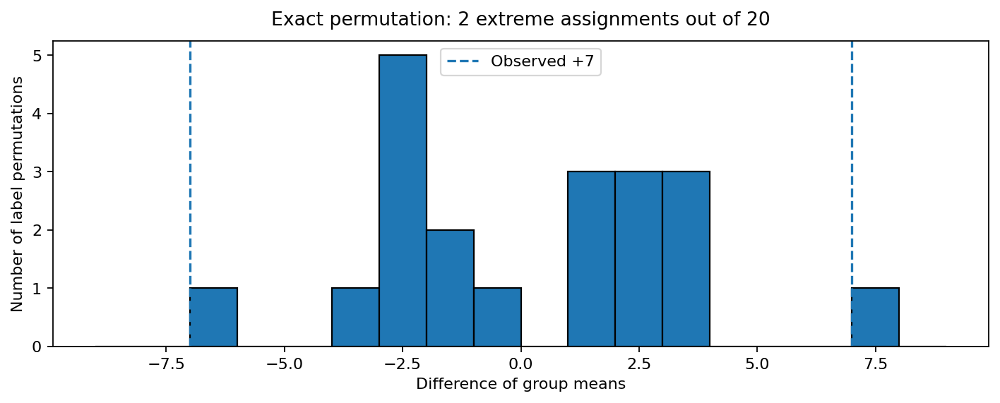
Fig. 179 شکل ۱۱ـ10. در مثال جایگشتی شش مشاهده، دو آرایش از بیست آرایش، دستکم به اندازهٔ مشاهده افراطیاند.#
۱۱ـ۱۶. شبیهسازی مونتکارلو؛ چرا اصلاح \(+1\) لازم است؟#
در نمونهٔ بزرگ، شمار همهٔ تخصیصها زیاد است و فقط \(B\) تصادفیسازی انجام میدهیم. اگر \(r\) بار از این \(B\) مقدارِ آماره دستکم به اندازهٔ مشاهده افراطی باشد، برآورد محافظهکارانهٔ رایج مقدار \(p\) چنین است:
این قرارداد، صفر گزارشکردن مقدار \(p\) فقط بهسبب تعداد محدود شبیهسازیها را رد میکند. برای مثال با ۹۹۹ تکرار، کوچکترین مقدار قابل گزارش ۰٫۰۰۱ است؛ پس نوشتن \(p<10^{-6}\) از چنین شبیهسازیای درست نیست. بذر تصادفی و تعداد تکرارها باید ثبت شوند. اگر پدیدهٔ مورد مطالعه دارای تاریخچه، خوشهٔ سازمانی، تکرار بیمار یا مشتری است، واحدِ تصادفیسازی نیز باید با فرض صفر هماهنگ باشد.
۱۱ـ۱۷. بازنمونهگیری Bootstrap و بازهٔ عدم قطعیت#
Bootstrap با نمونهگیری مجدد از واحدهای مستقل موردنظر برای آماره توزیع تقریبی میسازد. برای اختلاف میانگین دو گروه مستقل، از هر گروه با جایگذاری و به اندازهٔ اصلی نمونه میگیریم و اختلاف میانگین را ثبت میکنیم. صدکهای ۲٫۵٪ و ۹۷٫۵٪ یک بازهٔ صدکی تقریبی میدهند. bootstrap_mean_difference همین کار را با بذر ثابت انجام میدهد.
Bootstrap با جایگشت یکسان نیست: جایگشت برای توزیع آماره تحت فرض صفر طراحی میشود، ولی Bootstrap معمولاً عدم قطعیتِ برآورد را از نمونهٔ مشاهدهشده تخمین میزند. روی دادههای بسیار کوچک، سنگیندم، وابسته یا دارای مقدارهای مرزی، بازهٔ صدکی میتواند پوشش ضعیفی داشته باشد. اگر یک مشتری ده خرید دارد، بازنمونهگیری سطریِ مستقل ممکن است عدم قطعیت را بسیار کوچک نشان دهد؛ باید در سطح مشتری (Cluster bootstrap) بازنمونهگیری کرد.

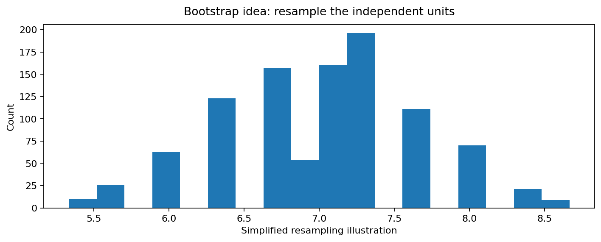
Fig. 180 شکل ۱۱ـ11. بازنمونهگیری برای سنجش عدم قطعیتِ برآورد؛ واحد بازنمونهگیری باید مستقل باشد.#
۱۱ـ۱۸. مقایسهٔ دو طبقهبند: از Accuracy به آزمون زوجی#
در فصل هفتم یاد گرفتیم که Accuracy به تنهایی کافی نیست. اکنون میپرسیم اختلاف دو طبقهبند روی همان دادهٔ آزمون معنادار است؟ اگر هر رکورد را هر دو مدل پیشبینی کردهاند، نتایج زوجی هستند و نباید بهطور ساده دو نسبت را مستقل فرض کرد. برای آزمون McNemar، فقط موارد ناهمخوان مهماند: \(b\) رکورد که A درست و B غلط است و \(c\) رکورد که A غلط و B درست است.
در مثال فایل paired_predictions_synthetic.csv، تعداد \(b=6\) و \(c=0\) است؛ روی ۱۲ رکورد آموزشی، شش مورد اختلاف به سود A وجود دارد. تحت فرض صفرِ احتمال برابرِ دو جهت اختلاف، و مشروط بر \(b+c=6\)، تعداد برد A یک دوجملهای با احتمال \(0.5\) است. مقدار \(p\) دقیق دوسویه برابر:
این فقط یک مثال ساختگی برای روش آزمون است. اگر چند مدل و آستانه را امتحان کرده و بهترین را براساس همین ۱۲ رکورد برگزیده باشیم، مقدار \(p\) ساده دیگر مسئلهٔ انتخاب را پوشش نمیدهد. همچنین اگر رکوردها مستقل نیستند، باید روش ارزیابی در سطح واحد مستقل بازطراحی شود.

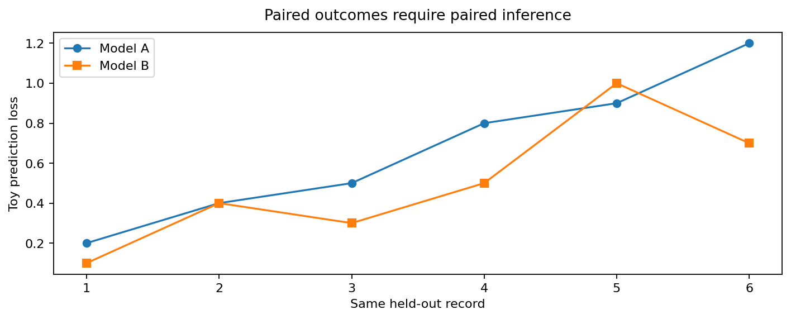
Fig. 181 شکل ۱۱ـ12. برآورد دو طبقهبند روی یک مجموعهٔ مشترک از رکوردها، مسئلهای زوجی است.#
۱۱ـ۱۹. انتخاب مدل با اعتبارسنجی متقاطع و خطر انتخاب بر اساس آزمون#
اعتبارسنجی متقاطع (Cross-validation) برای برآورد و انتخاب مدل مفید است؛ اما انتخابِ دهها مدل بر پایهٔ بهترین امتیاز CV و سپس معرفی همان بهترین امتیاز بهعنوان «عملکرد آینده» خوشبینی ایجاد میکند. برای انتخاب هایپرپارامتر، اعتبارسنجی تودرتو (Nested CV) یا جداسازیِ مجموعهٔ تنظیم و آزمون نهایی مناسبتر است. اگر سفارشهای یک مشتری به دو بخش آموزش و آزمون بروند، شباهتهای اختصاصی مشتری باعث نشت میشود؛ باید گروهبندی را در جداسازی رعایت کرد.
فرایند اصولی: (۱) مجموعهٔ توسعه برای یادگیری و تنظیم؛ (۲) انتخاب ویژگی، نرمالسازی و هر پردازش دیگر فقط با اطلاعات آموزش در هر Fold؛ (۳) انجماد مدل، آستانه و معیار؛ (۴) آزمون نهاییِ مستقل با گزارش بازهٔ عدم قطعیت؛ (۵) تکرار بیرونی روی دوره یا گروه جدید. تکرار ارزیابی روی همان Test و اصلاح الگوریتم بعد از دیدن آن، Test را به مجموعهٔ توسعه تبدیل میکند.
۱۱ـ۲۰. سنجش اعتبار قواعد انجمنی و جدول دو در دو#
فصل پنجم از Support، Confidence و Lift گفت. اما بزرگی Lift در گروههای کوچک ممکن است محصول نوسان باشد. فرض کنید جدول ساختگیِ دو قلم A و B چنین باشد:
B حاضر |
B غایب |
جمع |
|
|---|---|---|---|
A حاضر |
۱۲ |
۸ |
۲۰ |
A غایب |
۶ |
۲۴ |
۳۰ |
جمع |
۱۸ |
۳۲ |
۵۰ |
پشتیبانی \(A\cap B\) برابر \(12/50=0.24\) است. اطمینان \(A\Rightarrow B\) برابر \(12/20=0.6\) و احتمال پایهٔ B برابر \(18/50=0.36\) است؛ پس \(\mathrm{Lift}=0.6/0.36\approx1.667\). اگر حاشیههای جدول ثابت فرض شوند، آزمون دقیق غنیشدگی فیشر (Fisher exact, one-sided) مقدار احتمال حداقل ۱۲ اشتراک را از توزیع فوقهندسی میسازد:
این مقدار برای همین قاعدهٔ ازپیشتعیینشده است؛ اگر هزاران جفت را برای بزرگترین Lift جستوجو کرده باشیم، تعدد آزمون یا تصحیحِ فرایند انتخاب ضروری است. دادههای زمانی یا وابستگی به مشتری، فرض جدولِ شمارش مستقل را تغییر میدهد؛ گاهی باید تراکنشها را در سطح مشتری تجمیع یا از تصادفیسازی ساختارآگاه استفاده کرد.

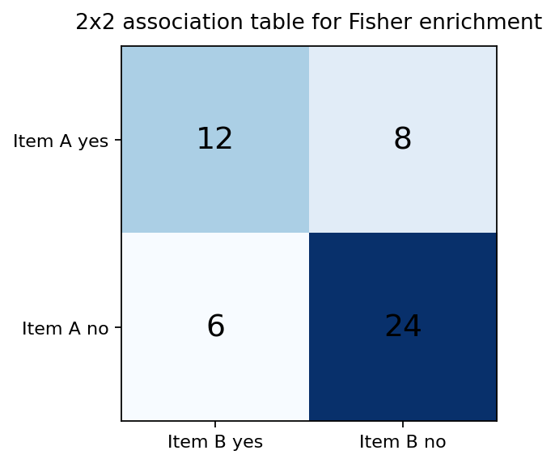
Fig. 182 شکل ۱۱ـ13. جدول دو در دوِ حضور قلمهای A و B در مثال غنیشدگی.#
۱۱ـ۲۱. ارزیابی معناداری خوشهها: چه توزیع صفر مناسبی است؟#
الگوریتم \(k\)-means حتی روی نقاط یکنواخت هم \(k\) خوشه تحویل میدهد؛ پس «وجود خوشه» به معنای ساختار واقعی نیست. از فصل هشتم شاخصهایی مانند Silhouette و SSE را میشناسیم، ولی مقدار عددی آنها بدون یک مرجع ممکن است گمراهکننده باشد. در آزمون خوشه، فرض صفر میتواند «داده از یک توزیع تکجمعیتی فاقد خوشهٔ جدا» باشد؛ سپس کل فرایند برازش و محاسبهٔ شاخص را روی دادههای صفرِ شبیهسازیشده تکرار میکنیم.
اگر خوشهها پس از انتخاب \(k\)، وزندهی ویژگیها، حذف نقاط و دهها اجرای تصادفی ساخته شدهاند، توزیع صفر نیز باید همین جستوجو و انتخاب را بازسازی کند. آزمایش شاخص فقط روی خوشهٔ برنده بدون بازتولید مراحل انتخاب، نادرست است. در دادهٔ پُربعد باید به همبستگیها و هندسهٔ مجاز توجه کرد؛ توزیع یکنواخت ساده روی یک مکعب ممکن است مبنای نامناسبی باشد.

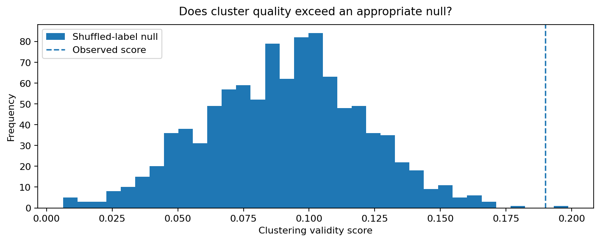
Fig. 183 شکل ۱۱ـ14. برای سنجش معناداری کیفیت خوشه، توزیع صفر باید تمام روند تولید خوشه و انتخاب را بازنمایی کند.#
۱۱ـ۲۲. غنیشدگی خوشهها و مثال استقلال برچسب#
گاهی پس از کشف خوشهها میپرسیم آیا در یک خوشه نسبت مشتریان یک دستهٔ مشخص بیشتر است؟ این مسئله «غنیشدگی» (Enrichment) است و میتواند با جدول دو در دو و آزمون فوقهندسی تحلیل شود. اما اگر برچسب مشتری در انتخاب ویژگی، انتخاب تعداد خوشه یا بازتعریف خوشه استفاده شده باشد، آزمون غنیشدگی روی همان داده بیطرف نیست. همچنین انجام آزمون برای همهٔ زوجهای «خوشه × ویژگی» خانوادهای از آزمونها ایجاد میکند که اصلاح FWER/FDR میخواهد.
برچسبِ بیرونی زمانی در ارزیابی مستقل است که در هیچ بخش از طراحی انتخابی دخالت نکرده باشد. اگر خوشهبندی فقط برای توصیف کاوشی است، بهتر است در متن نتیجه از عبارت «در دادهٔ حاضر غنیشدگی دیده میشود» استفاده شود و تأیید جمعیتی به مطالعهٔ جدید واگذار گردد.
۱۱ـ۲۳. ناهنجاریها: چرا Precision@k «معناداری آماری» نیست؟#
در فصل دهم سامانهای ساختیم که نمونهها را با امتیاز ناهنجاری مرتب میکند. اگر ۱۵ مورد نخست ۱۰ ناهنجاری واقعیِ ساختگی داشته باشند، \(\mathrm{Precision@15}=10/15\approx0.667\) است. این یک شاخص عملکرد عملی است؛ بهخودیخود مقدار \(p\) یا تضمین پایداری در دورهٔ بعدی نیست. برای استنباط باید واحد مستقل، شیوهٔ برچسبگذاری، تأخیر کشف و خطای انتخابِ مواردِ بررسیشده را مشخص کنیم.
در دادهٔ واقعی غالباً فقط هشدارهای بررسیشده برچسب میگیرند؛ در نتیجه برآورد عملکرد از همان موارد دارای برچسب دچار سوگیری انتخاب بررسی (Verification bias) میشود. اگر بودجهٔ بررسی ۱۵ مورد است، علاوه بر اندازهٔ اثر باید مقایسه با یک خط مبنای همان بودجه و بازهٔ عدم قطعیت نیز صورت گیرد. آزمون احتمالی برتری نسبت به خط مبنا باید با همان سازوکار نمونهگیری و وابستگی واحدها سازگار باشد.

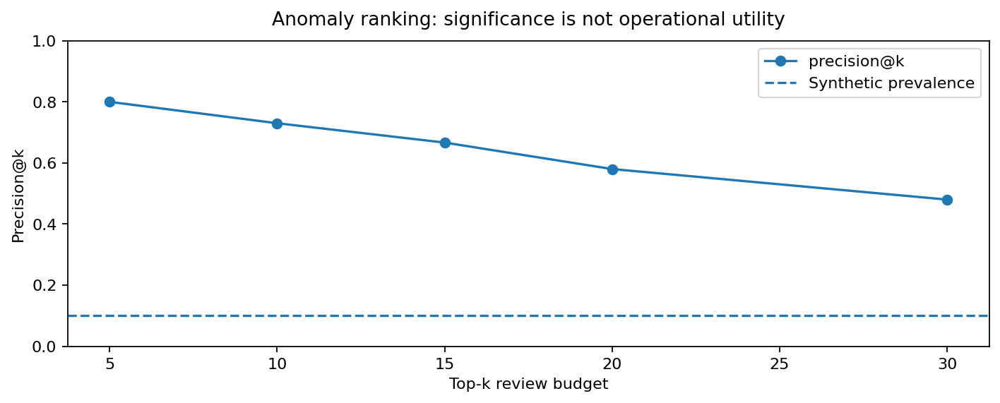
Fig. 184 شکل ۱۱ـ15. Precision@k یک معیار عملیِ رتبهبندی ناهنجاری است، نه مقدار p.#
۱۱ـ۲۴. کنترل منفی و راههای تشخیص کشفِ تصادفی#
کنترل منفی (Negative control) طراحی آزمایشی است که تحت فرض مشخص انتظار داریم رابطهٔ معنادار نداشته باشد. در تشخیصِ لغو سفارش میتوان برچسب را با رعایت ساختار زمان و مشتری در چارچوب فرض صفر جابهجا کرد و کل مسیر آموزش را تکرار نمود؛ اگر عملکرد ظاهراً عالی باقی بماند، احتمال دارد ویژگی نشتی یا خطای آزمایش وجود داشته باشد. اما جابهجاییِ بیقاعده میتواند خود سبب نقض فرضهای مسئله شود.
کنترل مثبت نیز مفید است: یک اثر معلوم و ساختگی کوچک به داده تزریق میکنیم تا بسنجیم فرایند توان کشف آن را دارد. در مطالعهٔ مشاهدهای، کنترلها جایگزین فرضیهٔ دقیق و دادهٔ مستقل نیستند؛ شواهد مکمل برای کشف نقصِ کد، طرح نمونهگیری و پیشپردازشاند.

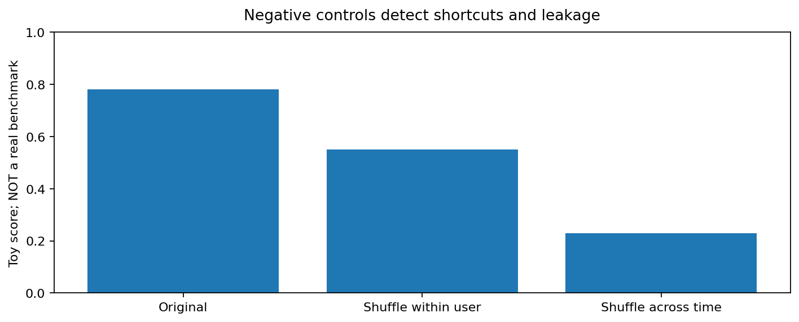
Fig. 185 شکل ۱۱ـ16. کنترل منفیِ ساختگی: از یک رابطهٔ ظاهری میتوان برای کشف نشتی یا خطای طرح استفاده کرد.#
۱۱ـ۲۵. نشت اطلاعات، آزمونگیری مکرر و انتخابِ برنده#
نشت اطلاعات (Data leakage) همیشه به معنای وجود مستقیم برچسب در یک ستون نیست. ممکن است میانگین نرمالسازی را از کل داده گرفته باشیم؛ یا رکوردهای یک مشتری در هر دو مجموعه قرار گرفته باشند؛ یا برچسبِ تأخیری به زمان گذشته نسبت داده شده باشد؛ یا دهها پیکربندی را روی همان Test تنظیم کرده باشیم. هر یک میتواند برآورد عملکرد را خوشبینانه کند.
تفاوت «آزمایش خوب» و «آزمایش انتخابشده برای گزارش» مهم است. اگر از ۲۰۰ اجرا تنها بهترین نمودار را منتشر کنیم، خواننده نمیتواند عدم قطعیت را بفهمد. گزارش قابل دفاع باید تعداد آزمونهای پنهان، بازهٔ انتخاب و معیار توقف را نیز توضیح دهد. در تحلیل متوالی، بازبینی مکررِ \(p\)-value و توقف اولین بار که کوچک شد، سطح آزمون معمولی را حفظ نمیکند؛ راهکارهای طراحی متوالی یا معیار توقف ازپیشثبتشده لازماند.

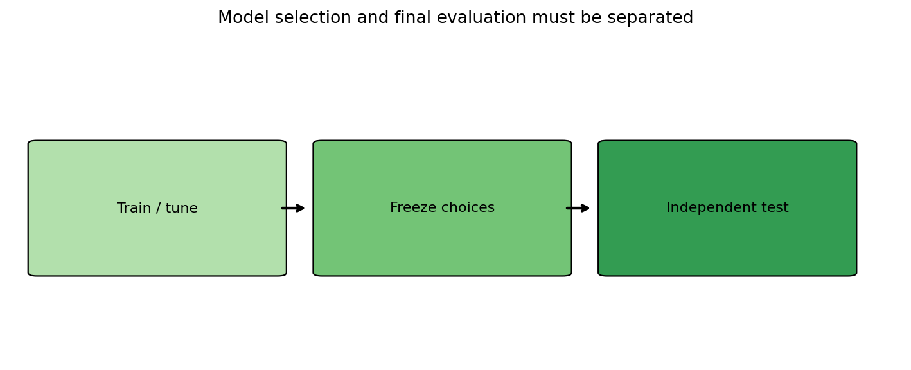
Fig. 186 شکل ۱۱ـ17. جداکردن تنظیم مدل، انجماد تصمیمها و آزمون مستقل ضروری است.#
۱۱ـ۲۶. اندازهٔ نمونه، توان، پایداری و اهمیت کاربردی#
زیادشدن نمونه خطای استاندارد را معمولاً کم میکند، پس تفاوت بسیار کوچک نیز میتواند از آستانهٔ معناداری آماری عبور کند. برای تصمیم کاربردی، باید هزینهٔ عملیِ تفاوت، تغییرپذیری بین گروهها و میزان پایداری در زمان هم سنجیده شود. فرض کنید بهبود یک مدل فقط ۰٫۱ واحد درصد باشد اما برای استفاده از آن باید هزینهٔ نگهداری چندبرابر شود؛ احتمالاً پرسش عملی «آیا این تفاوت توجیه اقتصادی دارد؟» مهمتر از \(p<0.05\) است.
توان با اندازهٔ اثر ازپیشمعنادار تعیین میشود، نه با اثر مشاهدهشدهای که پس از آزمایش انتخاب شده است. در طراحی، سناریوهای اندازهٔ نمونه و هزینهٔ خطا را بررسی کنید. پس از مشاهدهٔ نتیجه، بهجای «توان پسینی» مبتنی بر اثر مشاهدهشده، بهتر است اندازهٔ اثر، بازهٔ اطمینان و کیفیت طراحی را گزارش کنید.

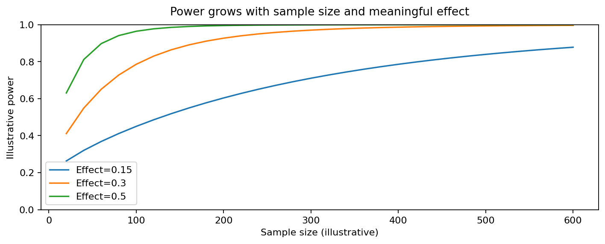
Fig. 187 شکل ۱۱ـ18. طرح شماتیک توان: توان به نمونه و اندازهٔ اثر وابسته است؛ نمودار صرفاً مفهوم را نشان میدهد.#

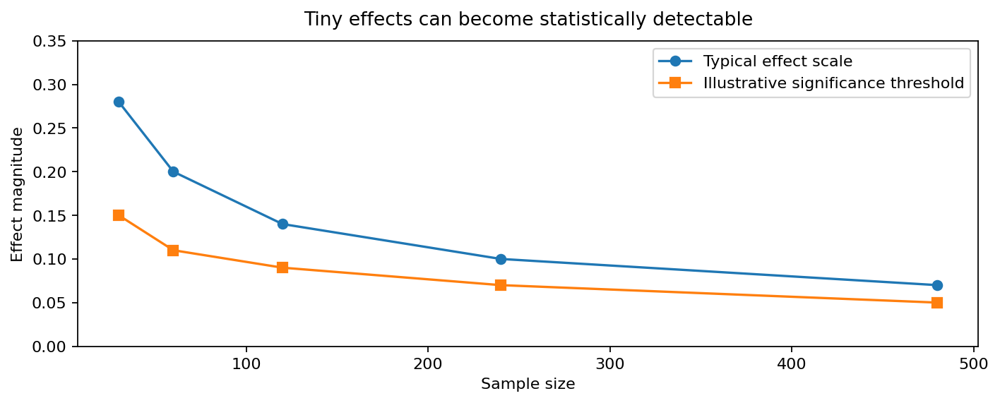
Fig. 188 شکل ۱۱ـ19. در نمونههای بزرگ، حتی اثرهای کوچک ممکن است از مرز معناداری آماری عبور کنند.#
۱۱ـ۲۷. کارگاه بازتولیدپذیر Python: از دادهٔ صفر تا گزارش#
برای اجرای مثالها به Python 3.12 و کتابخانهٔ استاندارد نیاز است؛ Notebook از Jupyter و برای رسم نمودار اختیاری از Matplotlib استفاده میکند. کد تمام محاسبات اصلی را با نامهای روشن ارائه میدهد: binomial_upper_tail، wilson_interval، bonferroni، holm، benjamini_hochberg، exact_permutation_difference، permutation_difference، bootstrap_mean_difference، mcnemar_exact، fisher_association و max_signal_null.
فایل pvalues_synthetic.csv شش مقدار مورد بررسی را نگه میدارد. فایل paired_predictions_synthetic.csv برای نمونهٔ McNemar است. در فایل JSON، پارامترهای آزمایش صفر با بذر ثبت شده است. دادهها از دنیای واقعی جمع نشدهاند و به هیچ شرکت یا فرد قابل انتساب نیستند. برنامه بدون اینترنت کار میکند و با python -m unittest test_chapter11_examples.py قابل آزمون است.
نمونهٔ خروجی مورد انتظار#
Exact one-sided binomial tail 8/10: 0.0546875
Bonferroni discoveries: [0]
Holm discoveries: [0]
Benjamini-Hochberg discoveries: [0, 1, 2]
Exact permutation: 0.1
McNemar: (6, 0, 0.03125)
Fisher enrichment: 0.004817
این خروجیها نتایج مثال مصنوعی هستند و نتیجهٔ هیچ مطالعهٔ میدانی یا اعتبارسنجی بالینی نیستند.
۱۱ـ۲۸. چگونه یک گزارش علمی قابل ممیزی بنویسیم؟#
یک گزارش قابل تکرار باید مسئله، واحد تحلیل، طرح نمونهگیری، دورهٔ زمانی، فرض صفر، آماره، جهت آزمون، سطح خطا، تعداد نامزدهای جستوجوشده و منطق اصلاح آزمونها را روشن کند. سپس مقدار آمارهٔ مشاهدهشده، اندازهٔ اثر، بازهٔ عدم قطعیت، \(p\) اولیه و اصلاحشده، شمار کشفها و آزمایش مستقل را ارائه دهد. کد، نسخهٔ داده، بذر تصادفی، کتابخانهها و تصمیمهای پیشپردازش نیز باید ثبت شوند.
زبان نتیجه اهمیت دارد: «در دادهٔ مستقل، اختلاف خطای دو مدل با آزمون مشخص و با فرضهای اعلامشده شواهدی علیه برابری فراهم کرد» دقیقتر از جملهٔ «مدل جدید قطعاً بهتر است» است. اگر نتیجه غیرمعنادار بود، ننویسید «دو مدل قطعاً برابرند»؛ برای برابری عملی، طرح آزمون همارزی و حاشیهٔ تفاوت مورد قبول لازم است.

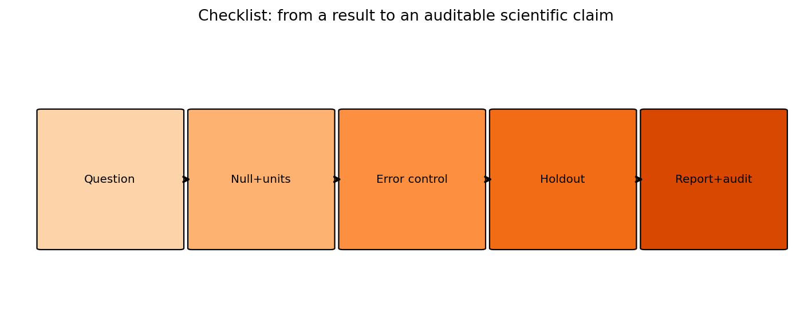
Fig. 189 شکل ۱۱ـ20. زنجیرهٔ ممیزی: فرض دقیق، واحد مستقل، کنترل خطا، آزمون مستقل و ثبت شواهد.#
۱۱ـ۲۹. تمرینها و پروژهٔ پایانی#
تمرینهای مفهومی (۱ تا ۱۰)#
۱. فرض صفر و فرض مقابل را برای «بهبود تشخیص لغو سفارش» دقیق بنویسید و واحد مستقل را مشخص کنید. ۲. چرا \(p=0.02\) به معنی «۹۸٪ احتمال درستی مدل» نیست؟ ۳. در نمونهٔ ۵۰۰۰ تراکنش از ۵۰ مشتری، چرا \(n=5000\) ممکن است اندازهٔ مؤثر نمونه نباشد؟ ۴. تفاوت خطای نوع اول و نوع دوم را در انتخاب مدلِ وامدهی توضیح دهید. ۵. FWER و FDR را از نظر هزینهٔ تصمیم مقایسه کنید. ۶. چرا اعمال اصلاح چندآزمونی فقط روی نتایجِ از پیش فیلترشده غلط است؟ ۷. تفاوت عدم رد \(H_0\) و اثبات برابری دو مدل چیست؟ ۸. نشت زمانی در تقسیم آموزش/آزمون را با مثال شرح دهید. ۹. چرا بهترین Silhouette بهتنهایی وجود خوشهٔ واقعی را ثابت نمیکند؟ ۱۰. برای آزمون تصادفیسازی در دادهٔ ماهانه چه قید زمانی لازم است؟
تمرینهای دستی (۱۱ تا ۲۰)#
۱۱. برای ۷ موفقیت از ۱۰ آزمون مستقل، مقدار \(p\) یکطرفهٔ دوجملهای را حساب کنید. ۱۲. برای ۹ موفقیت از ۱۰، همان محاسبه و تصمیم \(\alpha=0.05\) را انجام دهید. ۱۳. FWER را برای ۱۰ و ۱۰۰ آزمون مستقلِ صفر با سطح ۰٫۰۵ حساب کنید. ۱۴. برای چهار مقدار \(p=(.004,.018,.021,.3)\)، اصلاح Bonferroni را انجام دهید. ۱۵. روی همان چهار مقدار، مرحلههای Holm را بنویسید. ۱۶. همان چهار مقدار را با BH در سطح \(q=.05\) تحلیل کنید. ۱۷. برای گروههای \(A=(2,4)\) و \(B=(1,3)\)، چهارچوب جایگشت دقیق دوسویه را بنویسید. ۱۸. برای جدول دو در دو با شمارهای \(a=3,b=1,c=1,d=3\)، احتمال فوقهندسیِ مشاهدهٔ حداقل سه هموقوعی را حساب کنید. ۱۹. برای دو طبقهبند با \(b=5,c=1\)، آزمون دقیق McNemar را بهدست آورید. ۲۰. اگر از ۱۰۰ آزمون صفرِ معتبر ۵ مورد زیر ۰٫۰۵ باشد، توضیح دهید چرا این مشاهده بهتنهایی اثبات وجود اثر نیست.
تمرینهای برنامهنویسی و نقد پژوهش (۲۱ تا ۳۰)#
۲۱. برنامه را روی شش مقدار اصلی اجرا و خروجی سه اصلاح را مقایسه کنید. ۲۲. ترتیب سطرهای CSV را تغییر دهید و بیتفاوتی نتیجهٔ اصلاحها به ترتیب ورودی را بررسی کنید. ۲۳. برای ۱۰۰ فرض صفر یکنواخت، توزیع کمینهٔ \(p\) را در ۱۰۰۰ تکرار شبیهسازی کنید. ۲۴. خانوادهٔ فرضیهها را به ۶ و ۶۰ و ۶۰۰ افزایش دهید و تغییر تعداد کشفها را تحلیل کنید. ۲۵. با دو بذر، پایداری \(p\) مونتکارلو را بررسی کنید. ۲۶. با دادهٔ زوجی، خروجی McNemar را با روش اشتباهِ مستقل فرضکردن مشاهدات مقایسه کنید. ۲۷. در دادهٔ چند تراکنش بهازای یک مشتری، دو طرح Bootstrap سطری و مشتریمحور را مقایسه کنید. ۲۸. یک کنترل منفی برای قواعد انجمنی طرحریزی کنید و فرض تبادلپذیری را توضیح دهید. ۲۹. یک گزارش منتشرشده را از نظر انتخاب پسینی معیار، تعدد آزمون و عدم ذکر اندازهٔ اثر نقد کنید. ۳۰. پروژهٔ پایانی: مسیر دادهکاوی فصلهای ۵، ۷، ۸ و ۱۰ را به یک قرارداد ارزیابی واحد متصل کنید؛ برای هر خروجی، فرض صفر، توزیع مرجع، خانوادهٔ آزمونها، معیار کاربردی، فایل بازتولید و دادهٔ تأییدی بیرونی ارائه کنید.
۱۱ـ۳۰. جمعبندی و پیوند با فصل دوازدهم#
از فصل پنجم تا دهم آموختیم چگونه الگو، طبقهبند، خوشه و ناهنجاری تولید کنیم. فصل یازدهم نشان داد که «تولید خروجی» با «کشف معتبر» یکی نیست. اعتبار نتیجه از فرض صفر مناسب، واحد مستقل صحیح، کنترل انتخاب و آزمونهای متعدد، اندازهٔ اثر، گزارش عدم قطعیت و بازتولید مستقل ساخته میشود. روشهای Bonferroni و Holm برای کنترل خطای خانوادگی و BH برای کنترل FDR در شرایط مربوط طراحی شدهاند؛ هیچکدام جادویی نیستند و \(p\) نامعتبرِ حاصل از نشت یا طرح صفر نادرست را درست نمیکنند.
در فصل دوازدهم، مسئله از اعتبار یک تحلیل به مقیاسپذیری، دادههای پیچیده، استقرار و مراقبت از کیفیت کشف در سامانههای واقعی گسترش مییابد: چگونه همین قرارداد ارزیابی را در دادههای حجیم، جریانی و ناهمگن حفظ کنیم؟
منابع و مرز انتساب#
Pang-Ning Tan, Michael Steinbach, Anuj Karpatne, Vipin Kumar. Introduction to Data Mining, 2nd edition, Chapter 10 (Avoiding False Discoveries), printed pp. 755–808: Sections 10.1–10.6. مرجع اصلی آزمون، خطاهای چندگانه و ارزیابی معناداری در انواع وظایف دادهکاوی.
Jiawei Han, Jian Pei, Hanghang Tong. Data Mining: Concepts and Techniques, 4th edition, Section 4.3, printed pp. 163–168; Section 6.6, printed pp. 278–289. مرجع مکمل ارزیابی الگوهای انجمنی و انتخاب/ارزیابی طبقهبند.
توضیحات تکمیلی مؤلف جزوه: Wilson، طرحریزی واحد مستقل، محدودیتهای BH و کنترلهای منفی؛ فرمولها و مثالها با کد تألیفی بسته قابل بازتولیدند. نقلقول بلند یا شکل دارای حق نشر از هیچیک از کتابها بازتولید نشده است.